<title>FitID Demo</title>
<meta name="claude:viewport-fit-sides" content="cover">
<link rel="preconnect" href="https://fonts.googleapis.com">
<link rel="preconnect" href="https://fonts.gstatic.com" crossorigin>
<link rel="stylesheet" href="https://fonts.googleapis.com/css2?family=Archivo:wght@500;700;800&family=Inter+Tight:wght@400;500;600&display=swap">
<style>
  /* Layout: a single reading column of numbered steps; screenshots are the evidence, card crops sit beside the full page */
  :root {
    --bg: #f5f5f3; --surface: #ffffff; --fg: #121212; --muted: #5d5f66; --line: #e1e1de; --accent: #121212; --on-accent: #ffffff; --chip: #ecece8; --tag: #ffe9a8; --tag-fg: #5b4300;
    --display: "Archivo", "Segoe UI", system-ui, sans-serif;
    --body: "Inter Tight", "Segoe UI", system-ui, -apple-system, sans-serif;
    --mono: ui-monospace, "Cascadia Mono", Consolas, monospace;
  }
  @media (prefers-color-scheme: dark) {
    :root:not([data-theme="light"]) { --bg: #0c0c0d; --surface: #161618; --fg: #f2f2f1; --muted: #a3a4ab; --line: #2a2a2e; --accent: #f2f2f1; --on-accent: #0c0c0d; --chip: #1f1f22; --tag: #3d330f; --tag-fg: #fde68a; color-scheme: dark; }
  }
  :root[data-theme="dark"] { --bg: #0c0c0d; --surface: #161618; --fg: #f2f2f1; --muted: #a3a4ab; --line: #2a2a2e; --accent: #f2f2f1; --on-accent: #0c0c0d; --chip: #1f1f22; --tag: #3d330f; --tag-fg: #fde68a; color-scheme: dark; }
  * { box-sizing: border-box; }
  body { margin: 0; background: var(--bg); color: var(--fg); font: 16px/1.6 var(--body); }
  .wrap { max-width: 1040px; margin: 0 auto; padding-block: 40px 80px; padding-left: max(16px, env(safe-area-inset-left, 0px)); padding-right: max(16px, env(safe-area-inset-right, 0px)); }
  .brandmark { display: flex; align-items: center; gap: 10px; font: 800 15px var(--display); letter-spacing: .04em; text-transform: uppercase; }
  .logo { width: 28px; height: 28px; border-radius: 8px; background: var(--accent); color: var(--on-accent); display: grid; place-items: center; font-size: 14px; }
  h1, h2, h3 { font-family: var(--display); text-wrap: balance; letter-spacing: -.015em; }
  h1 { font-size: clamp(32px, 5.4vw, 52px); line-height: 1.05; font-weight: 800; margin: 24px 0 14px; }
  .lead { font-size: 18px; color: var(--muted); max-width: 62ch; margin: 0; }
  .quote { margin: 22px 0 0; padding: 14px 18px; border-left: 3px solid var(--accent); background: var(--surface); border-radius: 0 12px 12px 0; color: var(--muted); max-width: 64ch; }
  .flow { display: flex; flex-wrap: wrap; gap: 8px; margin-top: 26px; }
  .flow a { text-decoration: none; color: var(--fg); background: var(--chip); border: 1px solid var(--line); padding: 6px 12px; border-radius: 999px; font-size: 14px; font-weight: 600; }
  .flow a:focus-visible, a:focus-visible { outline: 2px solid var(--fg); outline-offset: 2px; }
  section.step { margin-top: 64px; display: grid; gap: 16px; }
  h2 { font-size: 27px; margin: 0; display: flex; align-items: center; gap: 12px; }
  .num { flex: none; display: inline-grid; place-items: center; width: 34px; height: 34px; border-radius: 50%; background: var(--accent); color: var(--on-accent); font-size: 16px; font-weight: 800; }
  h3 { font-size: 19px; margin: 12px 0 0; }
  .sub { color: var(--muted); margin: 0; max-width: 70ch; }
  .shot { margin: 0; background: var(--surface); border: 1px solid var(--line); border-radius: 14px; overflow: hidden; min-width: 0; }
  .shot img { display: block; width: 100%; height: auto; max-width: 100%; }
  .shot figcaption { padding: 10px 14px; font-size: 14px; color: var(--muted); border-top: 1px solid var(--line); }
  .shot figcaption b { color: var(--fg); }
  .grid2 { display: grid; grid-template-columns: repeat(auto-fit, minmax(min(300px, 100%), 1fr)); gap: 16px; align-items: start; }
  .split { display: grid; grid-template-columns: 1.7fr 1fr; gap: 16px; align-items: start; }
  .cards { display: grid; grid-template-columns: repeat(auto-fit, minmax(min(220px, 100%), 1fr)); gap: 14px; align-items: start; }
  .cards .shot img { background: #fff; }
  .phone { max-width: 380px; width: 100%; }
  .stack { display: grid; gap: 16px; }
  .box { background: var(--surface); border: 1px solid var(--line); border-radius: 14px; padding: 18px 20px; }
  ol.install { margin: 0; padding-left: 22px; display: grid; gap: 6px; }
  code { font-family: var(--mono); font-size: 14px; background: var(--chip); border: 1px solid var(--line); padding: 1px 6px; border-radius: 6px; overflow-wrap: anywhere; }
  .size { display: inline-block; font: 800 13px var(--display); background: var(--accent); color: var(--on-accent); border-radius: 6px; padding: 1px 7px; }
  .tag { display: inline-block; font-size: 12px; font-weight: 700; background: var(--tag); color: var(--tag-fg); border-radius: 999px; padding: 1px 9px; }
  .tips { display: grid; grid-template-columns: repeat(auto-fit, minmax(min(230px, 100%), 1fr)); gap: 14px; }
  .tips .box b { display: block; margin-bottom: 4px; font-family: var(--display); }
  .tips .box p { margin: 0; color: var(--muted); font-size: 15px; }
  a { color: inherit; }
  footer { margin-top: 64px; color: var(--muted); font-size: 14px; border-top: 1px solid var(--line); padding-top: 18px; }
  @media (max-width: 760px) { .split { grid-template-columns: 1fr; } section.step { margin-top: 48px; } }
</style>

<main class="wrap">
  <div class="brandmark"><span class="logo">F</span> FitID</div>
  <h1>Enter your measurements once. See your size on every store.</h1>
  <p class="lead">A walkthrough of the FitID extension for Microsoft Edge. Every screenshot was taken from the real extension running on live stores, for a shopper with a 39-inch chest, 33-inch waist and 26.4 cm foot.</p>
  <p class="quote">“A Medium at Zara doesn’t fit the same as a Medium at H&amp;M.” FitID reads each product’s own size chart and matches it to your body, so you stop guessing and stop returning.</p>
  <nav class="flow" aria-label="Steps">
    <a href="#install">1 · Install</a><a href="#profile">2 · Create profile</a><a href="#shop">3 · Shop as usual</a><a href="#guides">4 · Hidden size guides</a><a href="#popup">5 · Toolbar popup</a>
  </nav>

  <section class="step" id="install">
    <h2><span class="num">1</span>Install it in Edge (one time)</h2>
    <p class="sub">FitID isn’t in the Edge Add-ons store yet, so you load it from its folder.</p>
    <div class="box">
      <ol class="install">
        <li>Unzip <code>fitid-extension-1.0.0.zip</code> (or use the <code>dist/fitid-extension</code> folder from the build).</li>
        <li>Open <code>edge://extensions</code> in a new tab and turn on <b>Developer mode</b>.</li>
        <li>Click <b>Load unpacked</b> and choose the unzipped <code>fitid-extension</code> folder.</li>
        <li>Pin it: puzzle-piece icon → eye icon next to <b>FitID</b>. The black T-shirt icon stays in your toolbar.</li>
      </ol>
    </div>
  </section>

  <section class="step" id="profile">
    <h2><span class="num">2</span>Create your size profile</h2>
    <p class="sub">The profile page opens by itself after install. Enter <b>height, chest, waist and shoulders</b>. Height can be in cm or like <code>5'9</code>. Weight and foot length are optional, and FitID estimates anything you leave blank. Click <b>Save profile</b>.</p>
    <div class="grid2">
      <figure class="shot">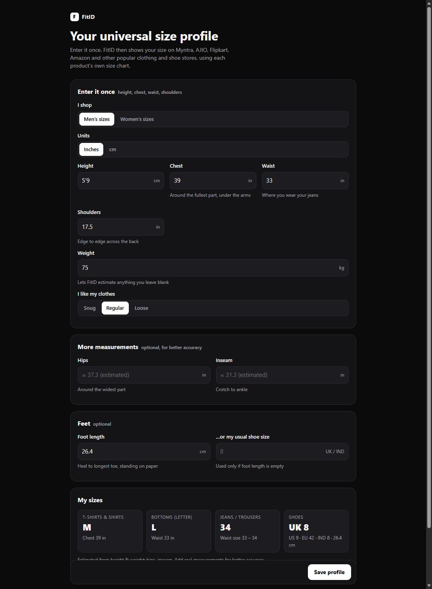<figcaption><b>Enter it once</b>: the four measurements, up front.</figcaption></figure>
      <figure class="shot">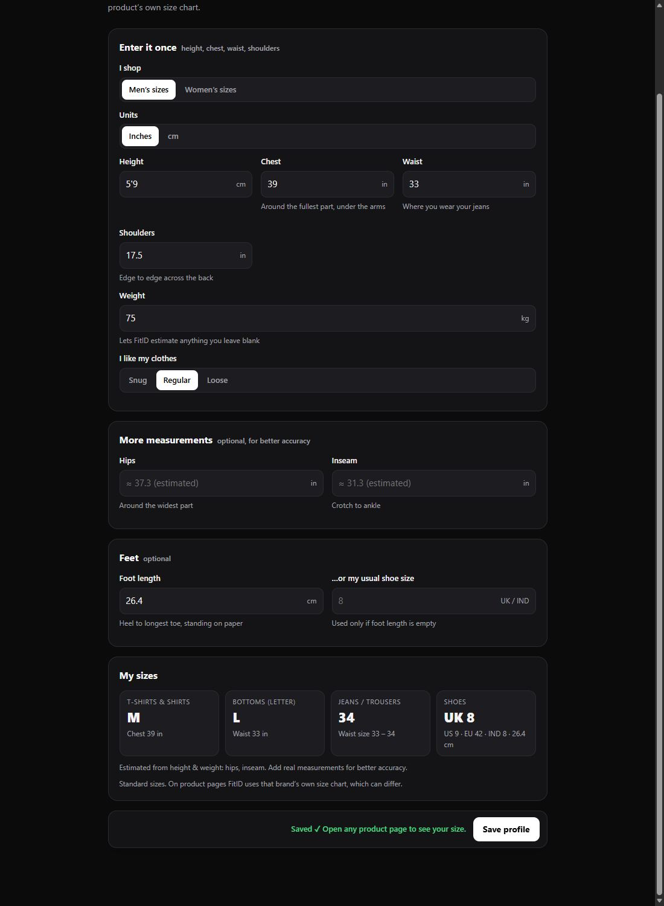<figcaption>After saving: your standard sizes in every system, from letter and waist sizes to shoes in UK, US, EU and IND.</figcaption></figure>
    </div>
  </section>

  <section class="step" id="shop">
    <h2><span class="num">3</span>Shop as usual. Your size appears by itself.</h2>
    <p class="sub">Open any product on Myntra, AJIO, Flipkart or Amazon. A small FitID card appears at the bottom right with <b>your size for this exact product</b>, worked out from the product’s own size chart. You don’t click anything.</p>
    <div class="split">
      <figure class="shot">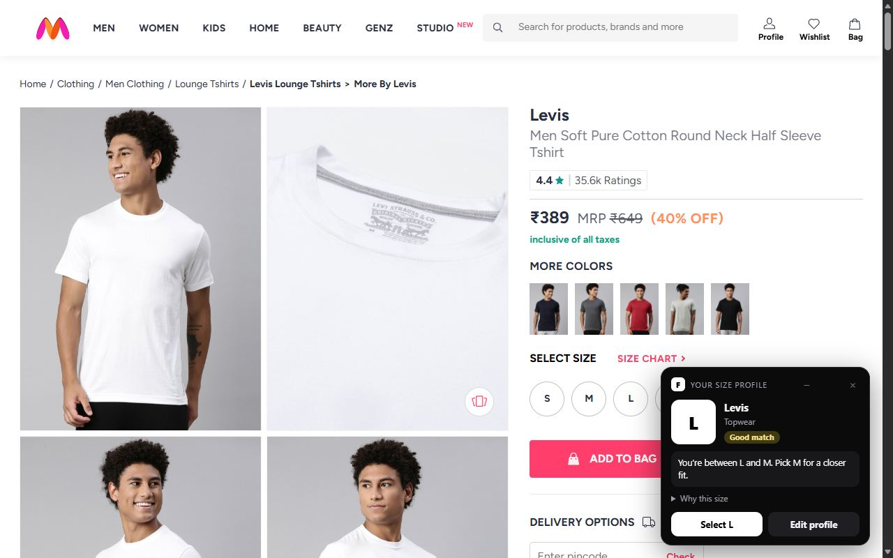<figcaption>Myntra · Levi’s tee: FitID says <span class="size">L</span> and warns you’re between L and M.</figcaption></figure>
      <figure class="shot">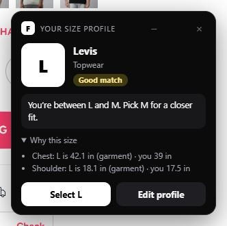<figcaption><b>Why this size</b> shows the reasoning: this L is 42.1 in at the chest and you’re 39 in.</figcaption></figure>
    </div>
    <figure class="shot">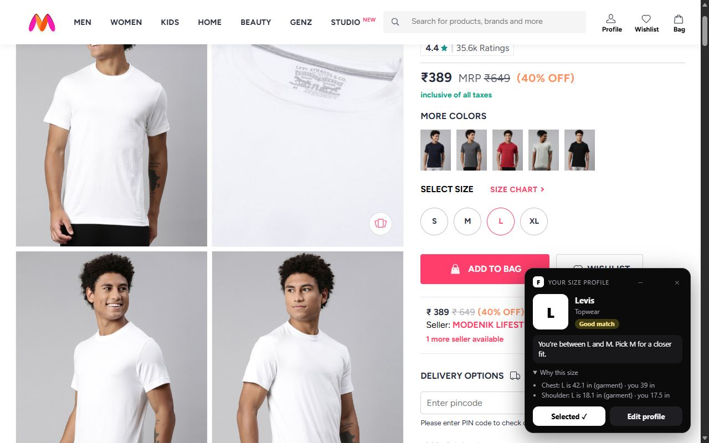<figcaption>Click <b>Select L</b> and FitID picks that size on the store’s page for you. Then just add to bag.</figcaption></figure>
    <h3>Same profile, other stores</h3>
    <div class="cards">
      <figure class="shot">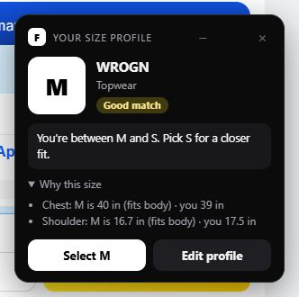<figcaption>Flipkart · WROGN polo → <span class="size">M</span></figcaption></figure>
      <figure class="shot">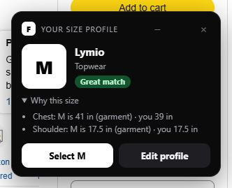<figcaption>Amazon · Lymio polo → <span class="size">M</span></figcaption></figure>
      <figure class="shot">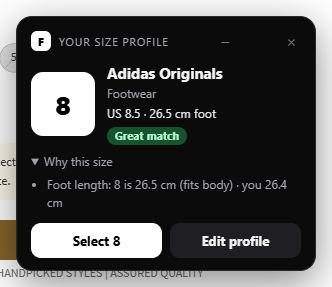<figcaption>AJIO · Adidas sneakers → <span class="size">UK 8</span> · US 8.5 · 26.5 cm foot</figcaption></figure>
    </div>
    <p class="sub">Card buttons: <b>–</b> shrinks it to a small “Your size” pill, <b>×</b> hides it on that page, and <b>Edit profile</b> opens your measurements.</p>
  </section>

  <section class="step" id="guides">
    <h2><span class="num">4</span>Stores that hide their size guide</h2>
    <p class="sub">Zara, Nykaa Fashion, Levi’s and U.S. Polo show their chart only after you open it. FitID offers to open it for you.</p>
    <div class="grid2">
      <figure class="shot">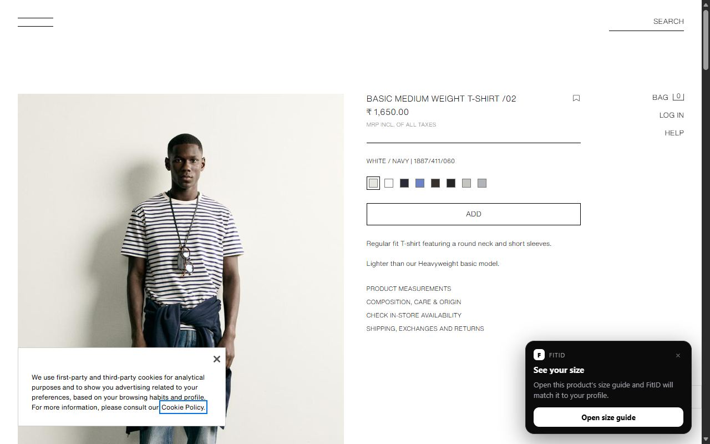<figcaption>Zara: click <b>Open size guide</b> on the FitID card…</figcaption></figure>
      <figure class="shot">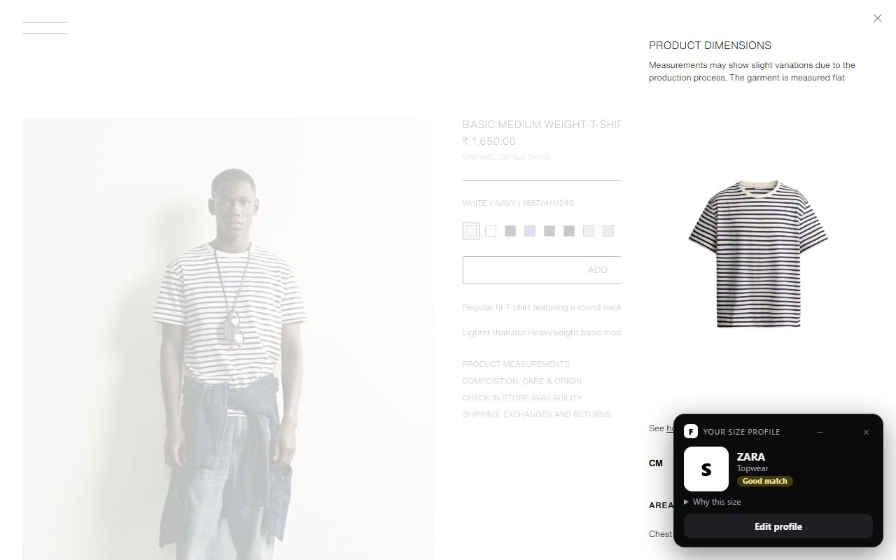<figcaption>…FitID reads Zara’s measurements and says <span class="size">S</span>. Zara runs big; the same shopper is M at H&amp;M.</figcaption></figure>
    </div>
    <p class="sub">On any other website: open its size guide, click the FitID toolbar icon, then <b>Find my size on this page</b>.</p>
  </section>

  <section class="step" id="popup">
    <h2><span class="num">5</span>The toolbar popup: your size at every brand</h2>
    <p class="sub">Click the FitID icon in the toolbar at any time.</p>
    <div class="grid2">
      <figure class="shot phone">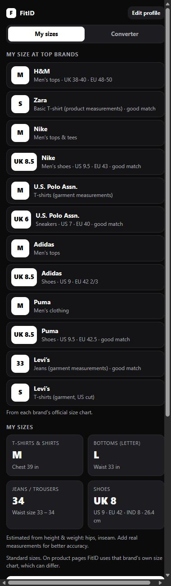<figcaption><b>My size at top brands</b>, from each brand’s official chart: H&amp;M M, Zara S, Nike M, Adidas M, Puma M, Levi’s 33 jeans, plus shoes. Below that, every brand you’ve viewed.</figcaption></figure>
      <div class="stack">
        <figure class="shot phone">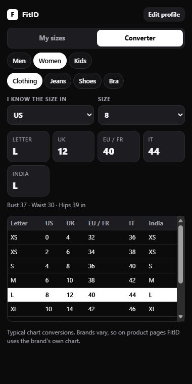<figcaption><b>Converter</b>: Women US 8 = UK 12 = EU 40 = IT 44. Your own size is marked <span class="tag">YOU</span>.</figcaption></figure>
        <figure class="shot phone">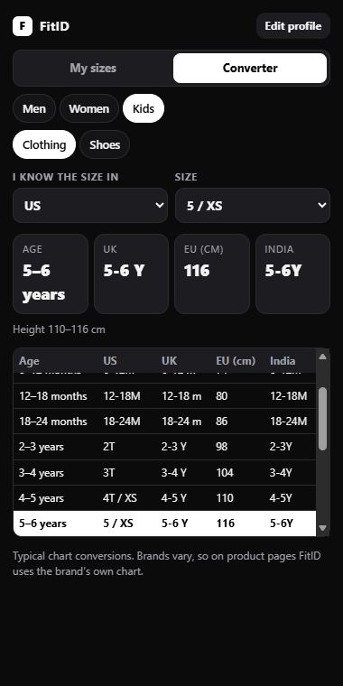<figcaption>Kids’ sizes by age and height for gifts, plus kids’ shoes.</figcaption></figure>
      </div>
    </div>
  </section>

  <section class="step">
    <h2><span class="num">★</span>Tips</h2>
    <div class="tips">
      <div class="box"><b>“You’re between M and L”</b><p>FitID tells you which way each size goes: the smaller one fits closer, the bigger one is roomier.</p></div>
      <div class="box"><b>Fit preference</b><p>On the profile, choose Snug, Regular or Loose. Every recommendation shifts to match.</p></div>
      <div class="box"><b>Real measurements win</b><p>Estimated values are labelled. A tape measure on chest, waist and shoulders gives “Great match” results.</p></div>
      <div class="box"><b>On your phone</b><p>Extensions only run on laptops and PCs. On mobile, use the website: <a href="https://fitid-sizes.vercel.app">fitid-sizes.vercel.app</a>.</p></div>
    </div>
  </section>

  <footer>FitID · Your universal size profile. Sizes come from each store’s or brand’s own size chart; brands change their charts, so treat a “Rough match” as a hint.</footer>
</main>
